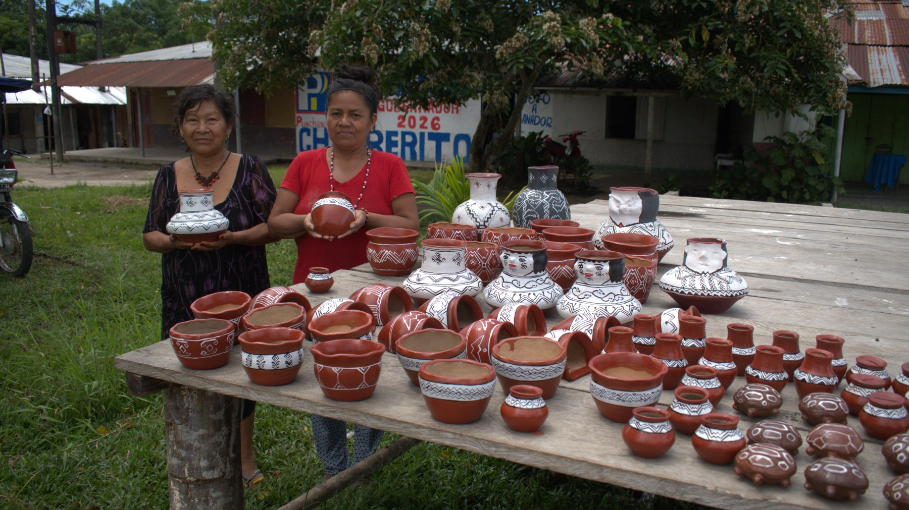

Reconocemos
Valoramos el origen, la historia y el conocimiento detrás de cada creación.
Economía comunitaria
Acercamos productos con historia, elaborados por manos kukama y vinculados al cuidado del territorio.
Conocer artesanías →
Cada pieza cuenta
Visibilizamos las creaciones de artesanas y artesanos kukama para que cada intercambio reconozca su trabajo, identidad y saberes. Apostamos por relaciones más justas entre quienes crean, quienes compran y el territorio que inspira cada producto.
Valoramos el origen, la historia y el conocimiento detrás de cada creación.
Abrimos espacios de encuentro entre comunidades, ferias y personas aliadas.
Promovemos un consumo consciente que fortalece la economía comunitaria.
Conoce más
Escríbenos para conocer nuestras próximas ferias y artesanías.